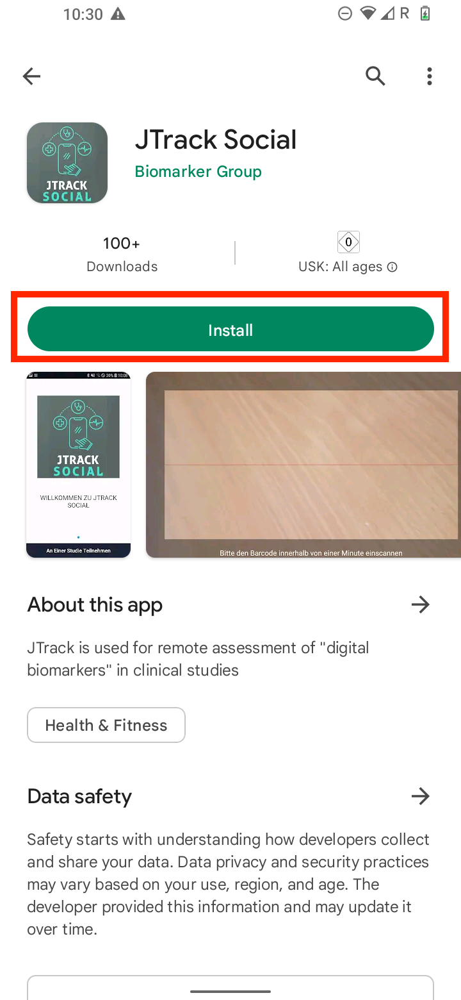
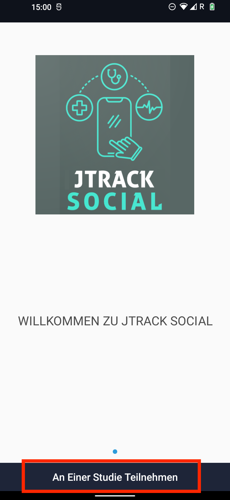
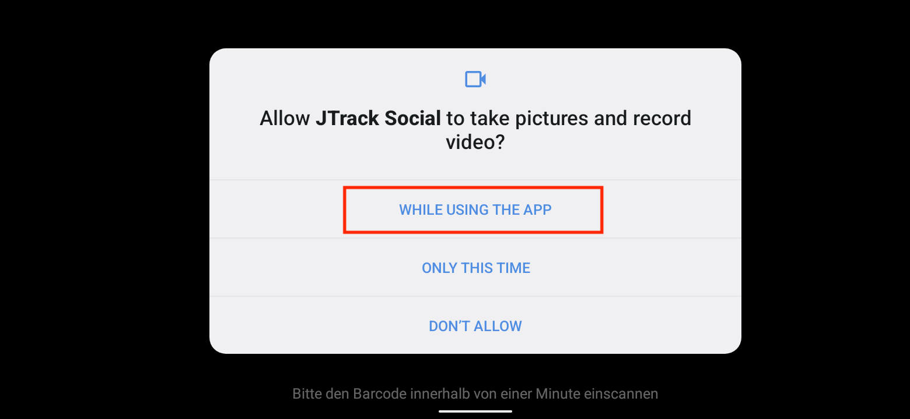
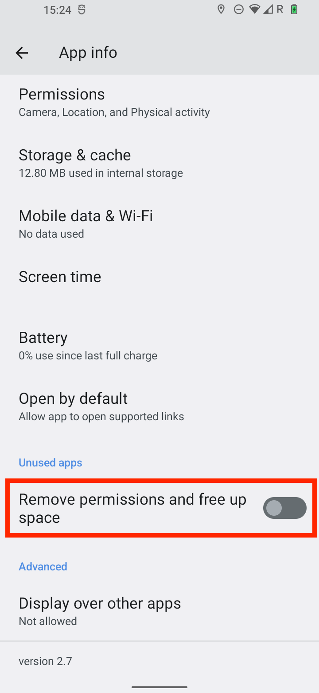
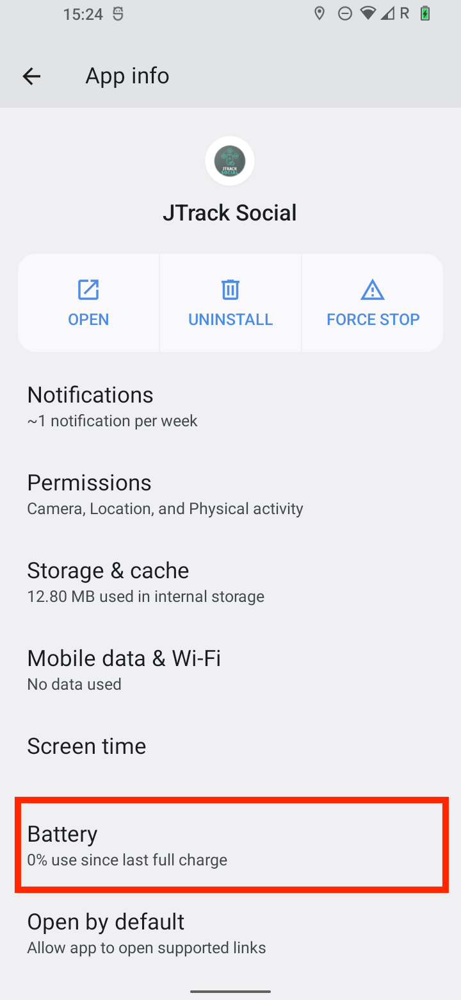
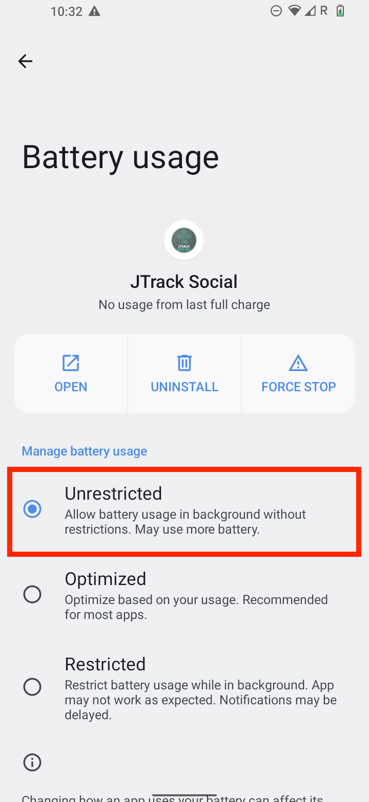
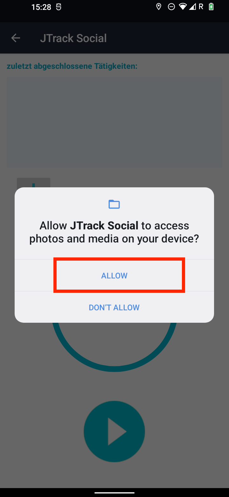
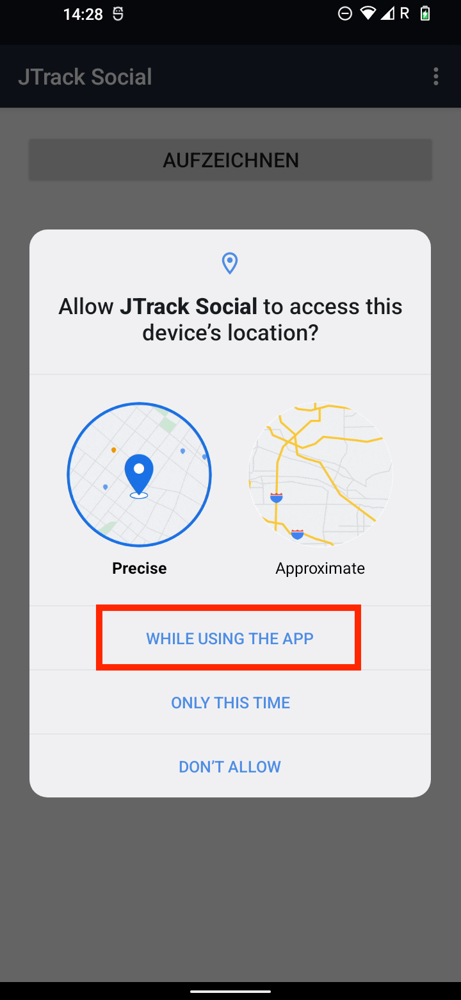
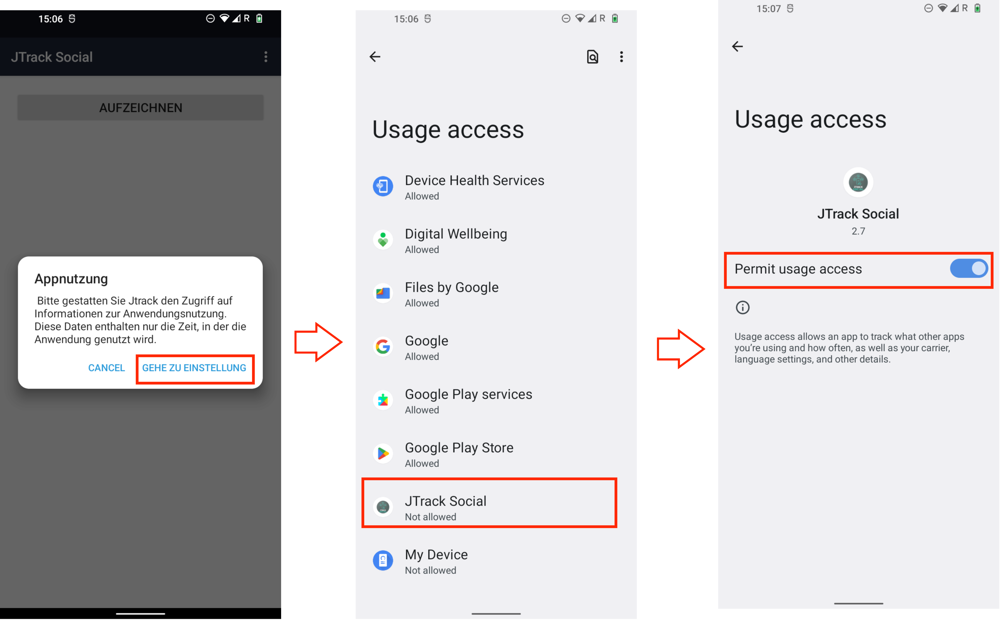
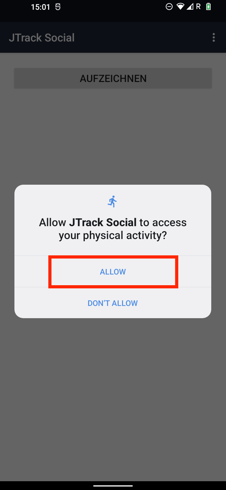

JTrack Social¶
JTrack Social is available for Android and iOS:
In the Google Play Store
Prerequisites¶
Your study coordinator has provided you with a QR code to join the study.
A stable internet connection is required during the initial setup.
Android - Install & Join the Study¶
1. Install the App¶
Open the Google Play Store on your Android device.
Search for JTrack Social and install it.
{kind=link}

2. Join the Study¶
Open JTrack Social and tap Join study.

When prompted, allow Camera access so the app can scan your study QR code.

Use your device camera to scan the QR code provided by your study team.
{kind=link}
{kind=link}
Important
For more about the study QR code, including how it is generated, see the project’s QR code documentation.
3. Complete Required Android Settings¶
After successful login, the app may prompt you to adjust Android system settings so background data collection can run reliably.
Tap the in-app button to open the App settings screen.

Disable Remove permission and free up space.

Open Battery optimization and set JTrack Social to Unrestricted.

Confirm Unrestricted is selected so Android does not limit the app.

{kind=link}
{kind=link}
{kind=link}
Tip
These settings help prevent Android from stopping the app in the background, which can interrupt data collection.
iOS - Install & Join the Study¶
Open the App Store on your iPhone.
Search for JTrack Social and install it.
Open JTrack Social and tap Join study.
Allow Camera access when prompted so the app can scan your study QR code.
Scan the QR code provided by your study team.
Allow any additional study-related permissions requested by the app.
Note
The exact permission and system-setting screens can differ across iOS versions. Follow the in-app instructions shown on your device.
Permissions by Sensor¶
JTrack Social only requests permissions for the modules enabled in your study. The screenshots below show Android examples; iOS permission prompts may look different.
Audio Sensor¶
Allows the app to record microphone input when audio collection is enabled in the study.
On some devices, the app may also request storage or media access so recordings can be saved locally before upload.
Allow Microphone access.

If requested, allow File/Storage access so recordings can be saved.

{kind=link}
Location Sensor¶
Enables location capture based on the study configuration.
Location samples are transformed before storage so the participant’s actual location cannot be reconstructed directly from the stored coordinates.
Allow the location permission when prompted.
{kind=link}

Application Usage Sensor¶
Collects app usage statistics, such as which apps are used and for how long.
On Android, this usually requires enabling Usage access manually.
To enable it on Android:
Open Usage access settings.
Select JTrack Social.
Enable the permission.
{kind=link}

Note
This module does not collect message contents, typed text, or other in-app content. It records general usage patterns only.
Activity Recognition Sensor¶
Detects basic physical activity states such as walking, running, or stillness.
Depending on the phone, the permission may appear as Activity recognition or another motion-related system prompt.
Allow Activity recognition when prompted.
{kind=link}

Garmin Pairing and Sync¶
If your study uses a Garmin wearable, pairing and syncing are handled directly inside JTrack Social. For participants, the main steps are:
Charge the Garmin device and turn it on.
Enable Bluetooth on your phone.
Open the Garmin pairing flow inside JTrack Social and follow the on-screen prompts.
Wait for the first sync to finish before starting normal study participation.
Keep the watch worn, charged, and within Bluetooth range of the phone.
Tip
If syncing seems delayed, first check that Bluetooth is enabled, the watch battery is not low, and JTrack Social is allowed to run in the background on the phone.
Detailed Garmin Guide¶
For full Garmin setup, pairing, dashboard configuration, syncing, and troubleshooting steps, see Garmin Integration.
Sensor Data in Comparison between iOS and Android¶
The overview above explains the sensor modules in plain language. The comparison below is intended for more technical readers who need platform-specific units, resolutions, and implementation details.
Sensor |
Unit (iOS) |
Unit (Android) |
Resolution (iOS) |
Resolution (Android) |
Notes |
|---|---|---|---|---|---|
Accelerometer |
(x, y, z) in m/(s*s) |
(x, y, z) in m/(s*s) |
up to 100 Hz |
up to 100 Hz |
battery draining, recommended only for Active Labeling tasks |
Gyroscope |
(x, y, z) in m/(s*s) |
(x, y, z) in m/(s*s) |
up to 100 Hz |
up to 100 Hz |
Rotation rate data, battery draining, recommended only for Active Labeling tasks |
Activity |
Movement state as numerical value |
Movement state as numerical value |
as the state changes with a minimum of 5 seconds for a state value |
as the state changes, Android itself defines the interval |
|
Application Usage |
seconds of an App in foreground |
ms of an App in Foreground |
15 minute time intervals starting at midnight for each day |
dynamic time intervals starting at midnight for each day |
iOS: category of app for non-Apple apps and name of app for Apple apps; Android: always app name and category |
Lock/Unlock |
number of screen locks/wakes in time interval plus amount of time in each state |
every lock/unlock as event with value “lock” or “unlock” |
15 minute time intervals starting at midnight for each day |
live events as lock/unlock is triggered |
|
Pedometer |
number of steps in a given interval |
number of steps in a given interval |
dynamic |
dynamic |
Active Labeling¶
Active Labeling allows study participants to perform predefined tasks while sensor data is recorded in the background. This enables precise labeling of sensor data with task context, which is valuable for data analysis, activity recognition, and model training.
What It Is¶
Active Labeling is a task-based sensor recording mode where participants are instructed to perform a specific activity or task, such as walking, standing, or brushing teeth. During the task:
Sensors such as accelerometer, gyroscope, activity recognition, and audio, if enabled, can record data.
The task name and duration are linked to the recorded sensor data.
Data is saved and can be uploaded for later analysis after the task ends.
The goal is to associate sensor data with a clearly defined ground-truth label, such as Brushing Teeth. Inside JTrack Social, Active Labeling is accessible from the main view if configured in JDash.
Participant Flow¶
Participants can:
Select a predefined task using autocomplete or enter one manually.
Review the task instructions.
Adjust the duration if needed.
Start the task.
Wait through the short countdown before data recording begins.
Perform the task while the selected sensors run in the background.
Let the task stop automatically or stop it manually.
The app logs:
Task name
Timestamp
Duration
Sensor data during the session
Recorded Data¶
Each Active Labeling session results in:
A
labeling eventwithtaskname,startTimestamp,endTimestamp, anddurationSensor data, such as accelerometer and gyroscope samples, tagged with the task name
An optional audio file that can be zipped and uploaded
A corresponding database entry such as
ActiveLabelingSensor,ActiveLabelingSession, orActiveLabelingTasks
Important
The task name is included as a label in every recorded sensor sample. This supports supervised learning and later analysis.
Data Upload¶
After the task finishes:
Sensor data is saved locally.
If the device is online and the server is reachable, the data is uploaded to the study backend.
If audio recording is enabled, the audio file is zipped and transmitted as part of the upload.
After successful upload, local files are deleted to save space.
Note
Data is only uploaded if JTrack_serverOnline and JTrack_connected are both true.
Best Practices¶
Use short, descriptive task names such as
Walking IndoorsorTyping.Keep task durations consistent across participants.
Include preparation time so participants can get ready before recording starts.
Avoid tasks with overlapping or ambiguous names.
Ensure all required sensor permissions are granted on participant devices.
General Troubleshooting¶
If tasks do not start:
Check whether
JTrack_activeLabelingEnabledis set to1or2.Ensure the task-list JSON is well-formed and downloaded successfully.
Verify that sensor permissions such as motion or microphone access are granted.
On iOS, ensure required background behavior is allowed by the device settings.
{kind=link}
{kind=link}
{kind=link}
{kind=link}
{kind=link}